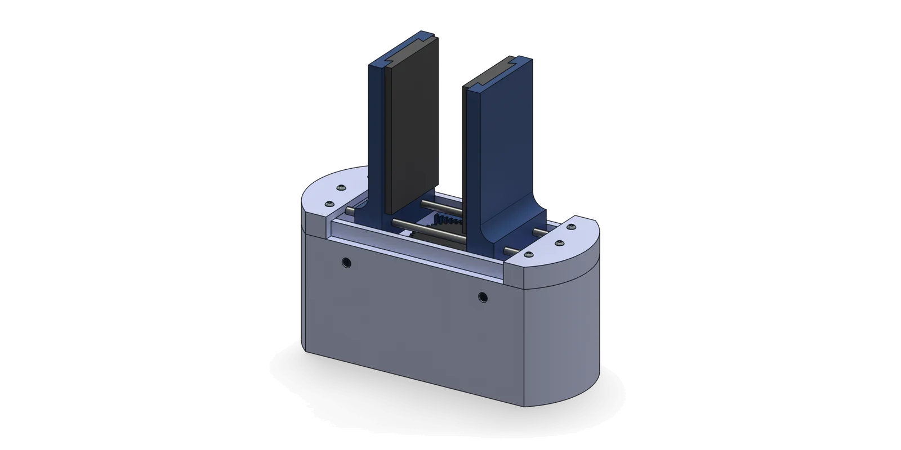

Back to Projects
Force-Feedback Robotic Gripper
Two-finger servo-driven rack-and-pinion gripper that closes to a target grip force instead of a fixed position, so one gripper handles fragile and rigid objects without retuning.

At a glance
Calculated from the datasheet and geometry; to be verified on the prototype.- 80 mmJaw opening, for objects 10 to 75 mm
- 110 mmFinger height
- 2 NDesign grip force (3.6 N ideal at stall)
- ~100 gPayload
- ~0.15 sFull stroke, unloaded
- MG90SMetal-gear servo, ~90° for full stroke
- Egg, ping pong ball, small rocksTest objects
Mechanical design
- One servo, one 25.4 mm-radius pinion, two opposed racks: fingers stay parallel.
- Each jaw rides on two 5 mm steel guide rods, 34 mm apart.
- Gear profile chosen to minimize backlash; lost motion becomes force error.
- PLA frame, flexible TPU pads; pads swap without reprinting the frame.
- v2 lever: smaller pinion = more force, less stroke headroom.

- Pinion48 teeth, driven by the servo
- RacksOne per jaw, opposed
- Guide rodsØ5 × 150 mm steel
- FSR pocket + TPU padOne force sensor behind each pad
In motion
- CAD animation of one full open-close cycle, seen from above.
- The servo turns the pinion; the opposed racks move the jaws equally.
- Jaws stay parallel from 80 mm open to fully closed.
Control system
- One FSR 402 force sensor per finger, in a pocket under the TPU pad.
- Arduino Uno runs a proportional controller in C++.
- Dedicated 5 V / 3 A servo supply, common ground: no brownouts at stall.
- Loop is written; gains and thresholds not yet calibrated.
Bench test plan
Planned, not yet run- Grip force vs. setpointWithin ±0.3 N at 0.5, 1 and 2 N
- Stroke0 to 80 mm, measured with calipers
- Size range10 to 75 mm without reconfiguring
- Ping pong ball10 lifts at 0.5 N, no dent
- 100 g rock10 lifts held 10 s at 2 N, no slip
- Egg10 lifts held 10 s at 1.5 N or less, no slip
- BacklashUnder 1 mm at the fingertip
- FSR driftWithin ±10% over 30 min
- Endurance500 open-close cycles, no cracks
Next steps
- Assemble the printed prototype.
- Calibrate force thresholds against FSR readings.
- Run grasp trials on fragile and rigid objects.